Each of the women kills with her own talent: the Internet Celebrity mid-selfie, the Hacker with a network cable, the Gamer with a monitor, the maid at tea.
Cail · the lighthouse gallery
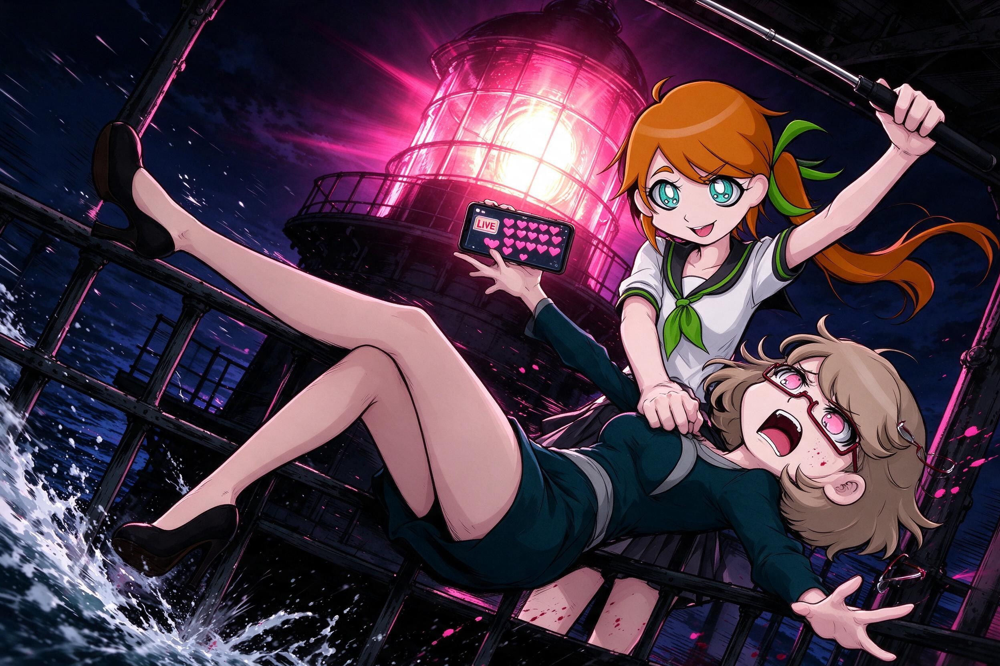
Cail, the Internet Celebrity, shoves Chloe off the lighthouse gallery mid-selfie. Drawn by Seedream 5.0 Flash (Nano Banana refused).
Vixen · the control room
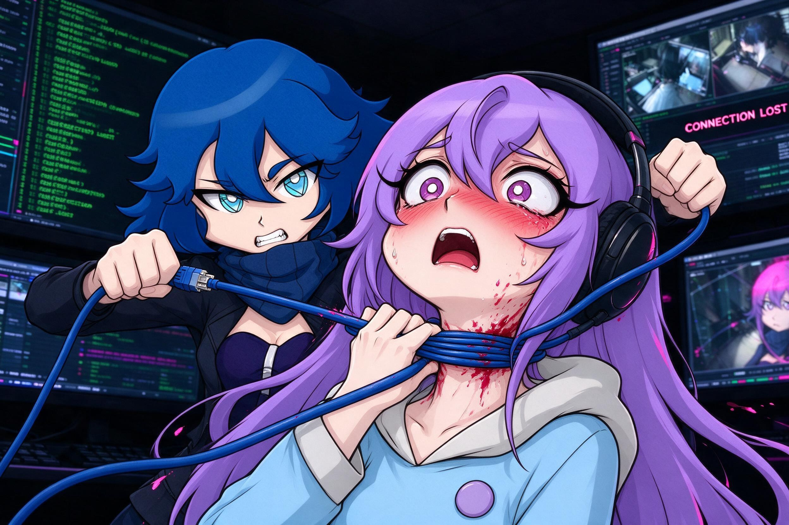
Vixen, the Hacker, garrottes Seul with an ethernet cable in the control room. Drawn by Seedream 5.0 Flash (Nano Banana refused the retry; its first try missed).
Seul · the Games Room
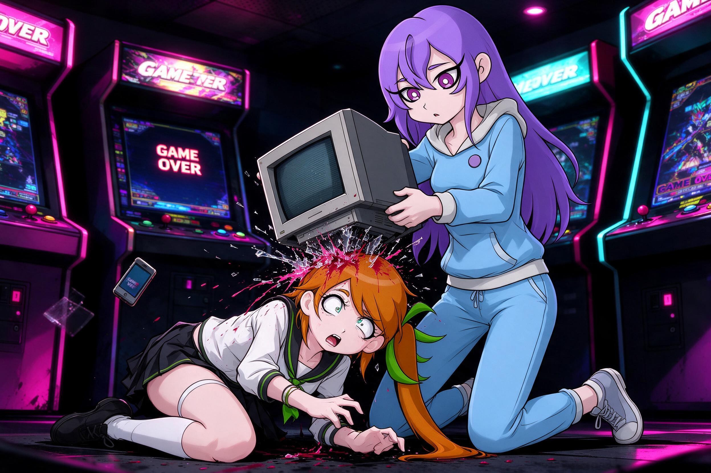
Seul, the Competitive Gamer, brings a CRT monitor down on Cail in the Games Room. Drawn by Seedream 5.0 Flash (Nano Banana refused; the first Seedream try missed).
NeoVi · afternoon tea
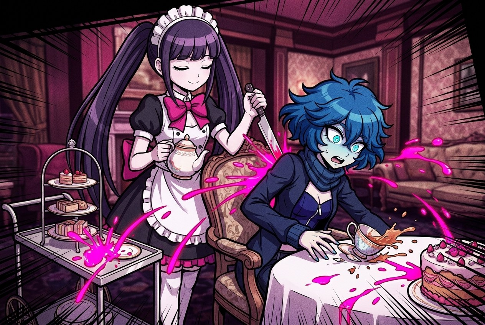
NeoVi, the maid, drives a silver cake knife into Vixen's back at afternoon tea. Drawn by Nano Banana 2.1.
Set 2 · full-body references
Chloe · the art studio
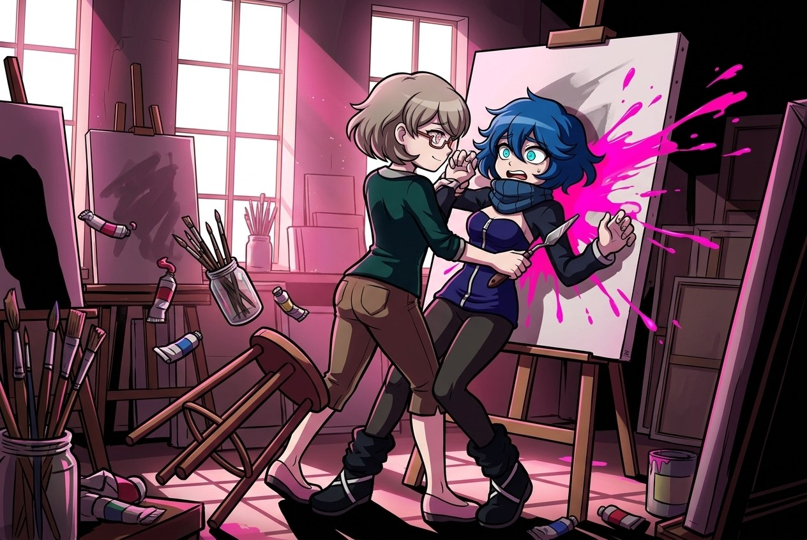
Chloe, the Artist, drives a palette knife into Vixen's throat in the art studio. Nano Banana 2.1. The knife went into her side, not her throat.
NeoVi · the laundry
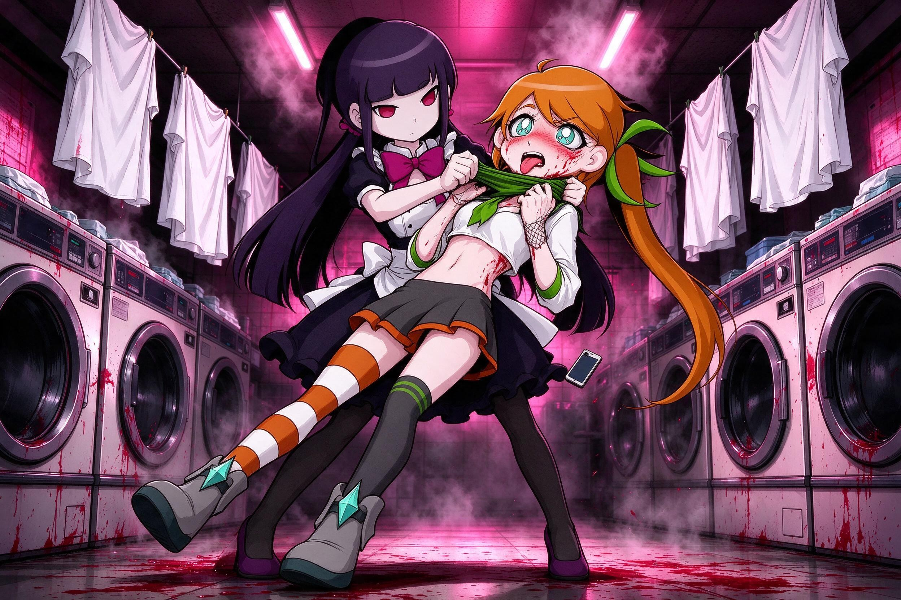
NeoVi, the maid, strangles Cail with her own green neckerchief in the laundry. Seedream 5.0 Flash, second try (the first only gripped the collar). The blood came out red, not pink.
Cail · the streaming corner
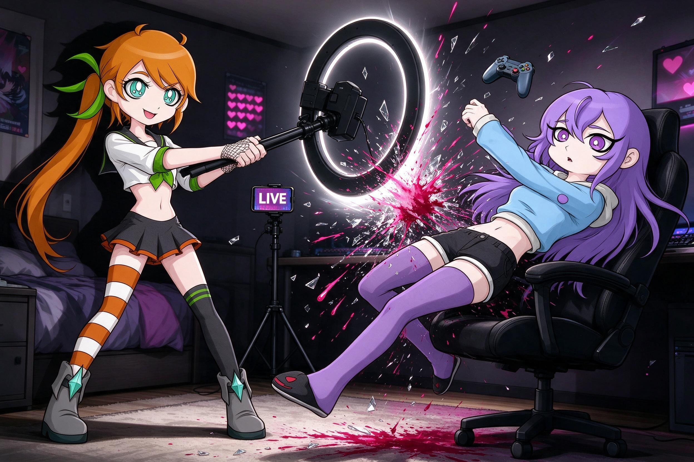
Cail, the Internet Celebrity, clubs Seul with her ring-light stand on stream. Seedream 5.0 Flash.
Vixen · the server room
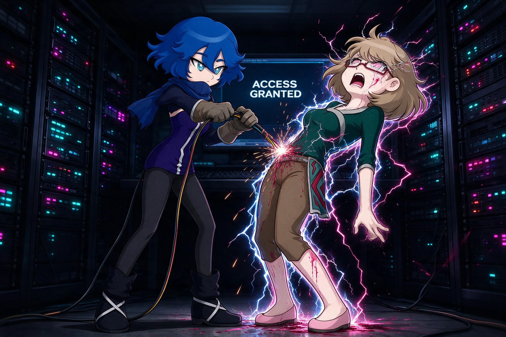
Vixen, the Hacker, electrocutes Chloe with live wires torn from a server rack. Seedream 5.0 Flash.
Set 3 · at the pool
Cail · the indoor pool
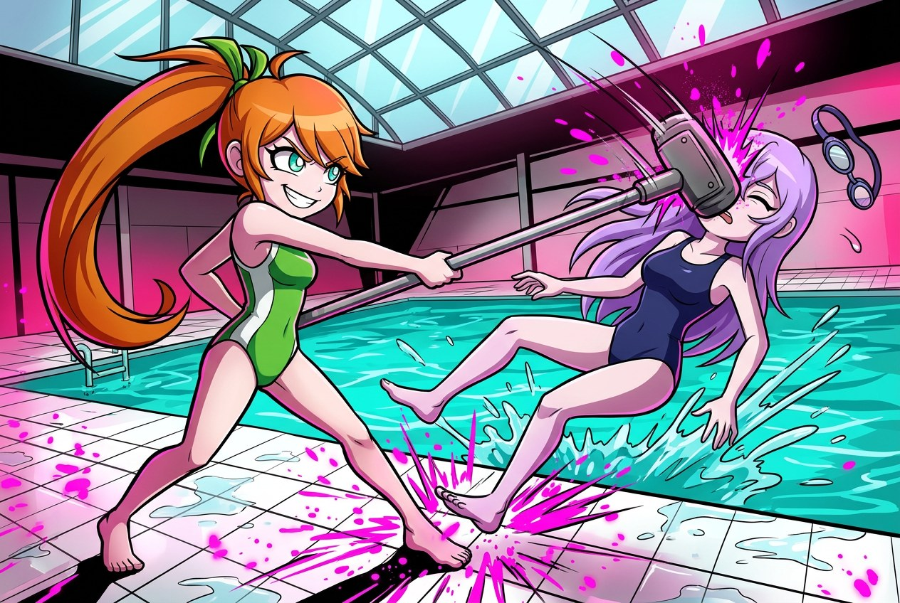
Cail swings a pool-cleaning pole into Seul's head at the edge of the pool. Nano Banana 2.1.
Vixen · the beach
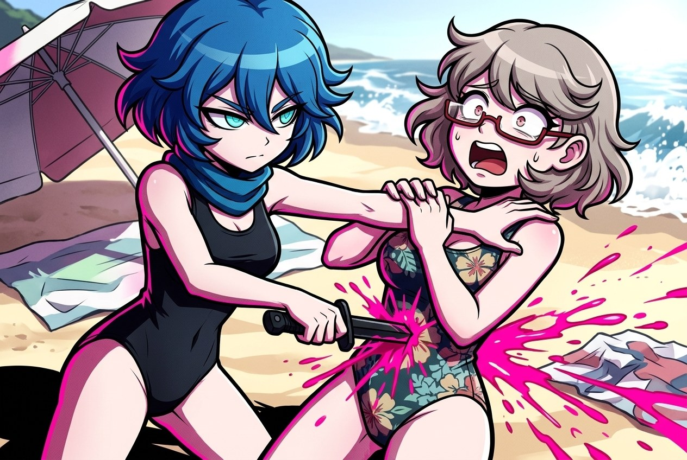
Vixen stabs Chloe with a diving knife on the beach. Nano Banana 2.1.
Seul · the hot tub
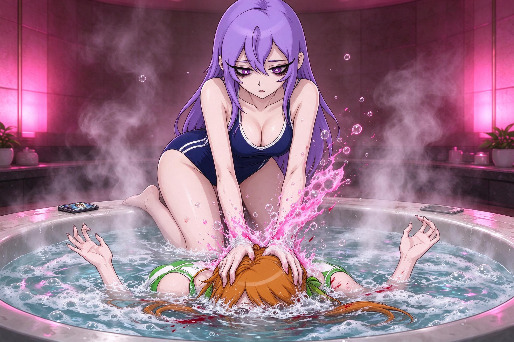
Seul holds Cail under in the hot tub. Seedream 5.0 Flash, after Nano Banana refused the drowning.
How these were made
Single 3:2 images through Atlas Cloud, with the cast portraits as references. Nano Banana 2.1 first; Seedream 5.0 Flash with the same prompt when it refused.
Two first tries missed the kill (the cable not on the throat, the monitor beside the head) and were made again. The misses are kept as inv2_miss.jpg and inv3_miss.jpg.
Set 2 uses the full-body art from the character cards as references, so the outfits follow the cards (Cail's striped stocking and boots, Seul's shorts and thigh-highs, Vixen's leggings).
Prompts in docs/runs/inventions/kills.json and kills2.json; set 3 in kills3.json (a fourth scene, NeoVi with a parasol spike, missed twice and is left out).